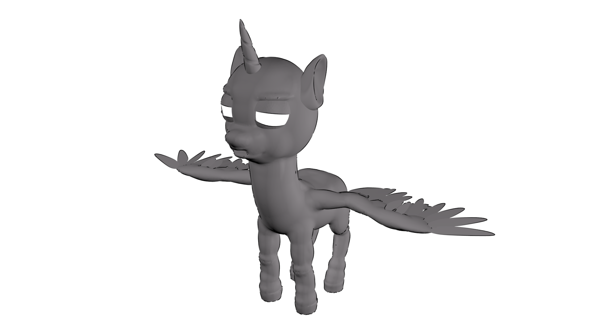

Приделываю крылья к Твайлайт. Надо отметить, что перья блендер делает отвратительно, а питоновый API для этих целей практически отсутствует(Blender 2.75). Самое обидное это то, что допилят всё это уже когда я запилю свой велосипед для натыкивания перьев. Ай, идите картинку смотрите.
I'm attaching the wings to Twilight. And Blender makes terrible feathers I must say, and python API for this purpose is practically nonexistent at the moment(Blender 2.75). And what gets me the most is the fact that it will most likely be fixed but only after I have already reinvented the weel. Oh well, go see the picture.
